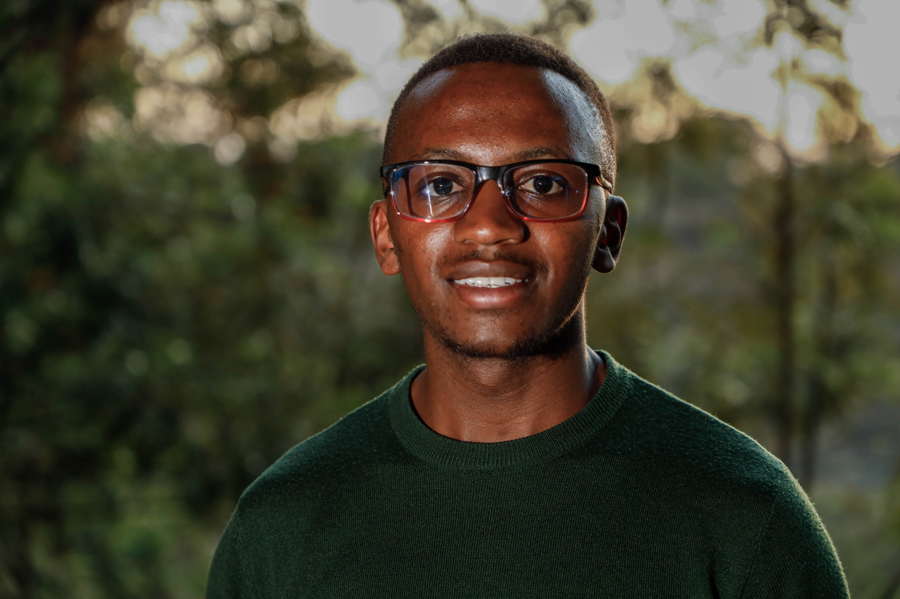

Hello, It's Me
Samuel Nyingi Kariuki
I'm a Researcher/assistant, a Mechanical Engineering Graduate, Volunteer, and a 3D printing Enthusiast.


I'm a Researcher/assistant, a Mechanical Engineering Graduate, Volunteer, and a 3D printing Enthusiast.
I am a dedicated Mechanical Engineering Graduate with practical experience gained through internships and training in both local and international settings. Skilled in 3D printing, additive manufacturing with bio-based materials, and machine maintenance, I have contributed to research in paste extrusion at TU Bergakademie Freiberg, Germany, and performed maintenance and installation tasks at Capwell Industries, Kenya. With strong leadership, critical thinking, and emotional intelligence, I am passionate about innovative engineering solutions that drive sustainable practices.
My career objective is to become a competent professional in the field of mechanical engineering while rendering services with passion and diligently to the best of my ability

A- | 2015-2018
Kenya Certificate of Secondary Education (KCSE)
Bachelor of Mechanical Engineering | 2019-2024
Degree Graduate

Germany is at the forefront of sustainable manufacturing, driving research in additive manufacturing using bio-based materials. This cutting-edge approach combines advanced 3D printing technologies with eco-friendly resources to reduce environmental impact while enhancing material performance. Researchers and engineers are developing biodegradable and renewable alternatives, paving the way for a greener future in production. By integrating nature-inspired solutions with modern engineering, this field is revolutionizing manufacturing, proving that innovation and sustainability can go hand in hand.
 with a sleek, lightweight design, featuring smart sensors and a 3D-printed structure. The AFO is shown in a dyn.webp)
Ankle-Foot Orthoses (AFOs) play a vital role in supporting movement, correcting deformities, and assisting individuals with muscle weakness. Designed to be lightweight yet durable, these orthopedic devices improve stability and enhance mobility. As Class I medical devices, AFOs are considered low-risk, alongside simple tools like bandages and handheld surgical instruments—yet their impact on daily life is profound. From traditional models to modern advancements like 3D-printed and sensor-equipped designs, AFOs continue to evolve, bridging the gap between biomechanics and technology to empower movement.
Email: samkariuki101@gmail.com
Phone: +254 792 353784
Social Media: LinkedIn